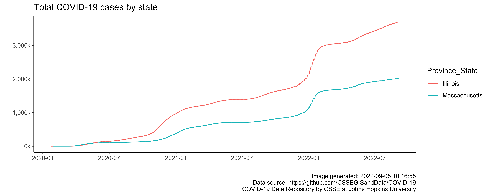

Reproducibility, replicability and repeatability are related terms used by research communities referring to:
the ability to re-run analyses or computational methods and get consistent or identical results (computational)
the ability to re-run a study’s methodology and get consistent results from running a new study by following procedures as closely as possible (experimental)
Reproducibility Crisis
Why Do Reproducible Research?
Public Good (Transparency)
Good for Your Future Self
Increasingly, journals require this
Recommended or expected by funding agencies
NIH Requirement for Data Management and Sharing Policy (2023)
Data openly available for view and reuse
Require Data Management and Sharing Plan
Includes data storage, access, preservation, metadata, and distribution
Timeline: no later than associated publication or end of performance period (whichever comes first)
Findable (unique/persistent DOI? registered in searchable resource?)
Accessible (protocol open and free?)
Interoperable ([meta]data use formal, accessible, shared, broadly applicable language?)
Reusable ([meta]data richly described with attributes, associated with provenance)
Metadata
Answer the following questions and document:
For measures: the Who, What, When, Where, Why, and How?
How is the data structured?
Why was the data collected?
Who should get credit for this data (researcher AND funding agency)?
How can this data be reused (licensing)?
Reproducibility Spectrum
Don’t Use Excel
In 2020, the UK COVID tracing program “lost” thousands of COVID cases when Excel ran out of rows. Data in csv format were imported into xls templates, which are limited to 65,536 rows. Any extra data rows were silently discarded.
Someone eventually noticed that they were receiving exactly 65,536 rows every day, 8 days in a row.
15,480 additional cases of COVID-19 were not traced during those 8 days. Contacts were not tested or notified.
Geek vs. Non-Geek
Reproducible Workflow
Github
Packages
docker - lock down working environment with a Docker image (resistant to change in OS, R, packages, etc.)
drake - rebuilds intermediate data objects when dependencies change and provides visualizations
rrtools - instructions, templates, and functions for making compendia for articles/reports
repo - store R data files in central local repository with tags, annotations, provenance and dependence
# A tibble: 6 × 10
study_id rando…¹ exclu…² arm recei…³ dnr_i…⁴ compl…⁵ disco…⁶ analy…⁷ not_a…⁸
<chr> <chr> <chr> <chr> <chr> <lgl> <chr> <chr> <chr> <lgl>
1 000001 <NA> Were n… <NA> <NA> NA <NA> <NA> yes NA
2 000002 yes <NA> Infl… yes NA <NA> Were l… yes NA
3 000003 yes <NA> Azat… yes NA <NA> Had ot… yes NA
4 000004 yes <NA> Azat… yes NA Comple… <NA> yes NA
5 000005 yes <NA> Infl… yes NA Comple… <NA> yes NA
6 000006 yes <NA> Azat… yes NA <NA> Were l… yes NA
# … with abbreviated variable names ¹randomized, ²excluded_reason,
# ³received_int, ⁴dnr_int_reason, ⁵completed, ⁶discont_reason, ⁷analyzed,
# ⁸not_analyzed
Code
make_consort(status3)
Example R Markdown Reports and Apps
Example study provided participants with letters regarding their sleep data
Tracking spreadsheet of community health worker activities (via REDCap API)
Shiny app with maps displaying opioid use by region deployed on web
Manuscripts with R Markdown
Plots with Real-time Data

Code Versioning 1
xkcd
Code Versioning 2
PhD Comics
File Naming
PhD Comics
The Whole Tale
Whole Tale is an NSF-funded Data Infrastructure Building Block (DIBBS) initiative to build a scalable, open source, web-based, multi-user platform for reproducible research.
“tales” are executable research objects that capture data, code, and the complete software environment used to produce research findings.
Preparing and Reporting Statistical Code
Write for others to understand and for you and your team to save
Value clarity over brevity
Annotate the code’s purpose and structure
Add English pseudocode to explain the purpose of each step
Embed supporting technical references
Checklist
Think through the entire process - will everything be reproducible?
Is the data cleaning, manipulation, analysis automated?
Is there use of version control? Are prior versions easily seen?
How is software, hardware, operating systems, and library versions tracked?